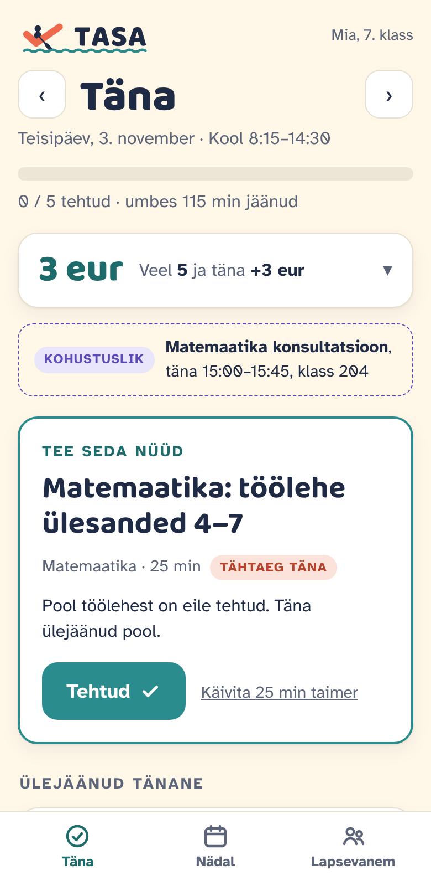
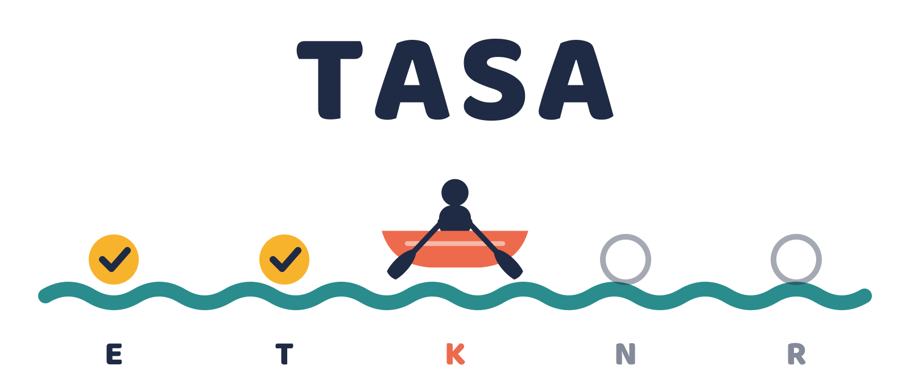

Ainult tänane. Üks samm korraga.
Vahel võib õppimisega seotud ülesandeid olla nii palju, et lapsel on raske kuskilt otsast alustada või õppimist planeerida. TASA võtab ülesanded ja tähtajad e-päevikust, jagab töö umbes 25-minutilisteks sammudeks ja näitab lapsele ainult tänast päeva.
Peredele alati tasuta
Näha terve kuu tähtaegu ja ülesandeid on liiga palju
E-päevik näitab kõike: kontrolltööd, referaadid, loetavad raamatud ja homsed ülesanded. Paljudele lastele on see ülekoormus. Nad ei tea, kust alustada või kuidas planeerida ning jätavadki alustamata.
TASA ei asenda eKooli ega Stuudiumit. Ta võtab sealt olemasoleva info ja teeb sellest lapse jaoks ühe selge järgmise sammu.
E-päevik: kõik novembri tähtajad korraga. TASA: ainult see üks päev.
E-päevikust tänase plaanini
Ülesanded tulevad e-päevikust
Kodutööd, tähtajad, kontrolltööd ja hinded tulevad eKoolist või Stuudiumist ametliku liidese kaudu, kooli loal. Õpetaja ei pea midagi lisaks tegema.
TASA jagab ülesanded väikesteks osadeks
Suur töö jaguneb umbes 25-minutilisteks sammudeks, võttes arvesse tähtaegu ja tööde mahtu.
Iga linnuke on pidu
Laps näeb ühte kaarti „Tee seda nüüd“. Iga tehtud samm, ehk linnuke, toob ekraanile esile julgustava lause. Tehes ära terve päeva ülesanded, toimub ekraanil väike pidu.
Plaan, mis aitab lapsel ise ette mõelda
TASA pikem eesmärk on õpetada lapsele enesejuhtimist ja ajaplaneerimist, et ta oskaks ühel päeval oma tööd ise osadeks jagada ja enda aega planeerida.
Kontrolltööks valmistumine
Kordamine algab 7 päeva enne kontrolltööd, eriti matemaatikas, keemias ja füüsikas.
Järelvastamise plaan
Hinne alla 3 (vaikimisi, kuid muudetav) või MA muutub automaatselt järelvastamise plaaniks. Vanem saab üles laadida foto tehtud tööst, TASA planeerib järeltööks õppimise nii, et valesti läinud ülesandeid saab harjutada. TASA ei lahenda ega selgita ülesandeid lapse eest.
Raamat lehekülgedeks
Sisesta raamat, praegune lehekülg ja tähtaeg. Plaan ütleb täpselt: „loe lk 41–60“.
Eilne jääk tuleb ette
Mis eile tegemata jäi, on täna nimekirja eesotsas. Midagi ei kao ära.
Kohustuslikud ajad
Näiteks iganädalane matemaatika konsultatsioon on kalendris märgiga „Kohustuslik“.
Lapsevanema vaade
Vanem saab ülesande haiguse tõttu vabandada ja märkida preemia välja makstuks. Laps vanema vaadet ei näe.
Pingutus on nähtav. Mida see tähendab, otsustab lapsevanem.
Üks preemia, mille lapsevanem ise määrab: nimi, ühik ja kui palju iga samm või terve päev toob. Laps näeb oma saldot.
Vanem kirjutab ise, mis preemia on
- Ekraaniaeg · minutit · +10 iga sammu eest
- Taskuraha · eur · +3 iga täiesti tehtud päeva eest, terve nädal +10
- PS4 · tähte · 1 iga sammu eest, eesmärk 20 tähte
- Filmiõhtu · tähte · eesmärk 10, filmi valib laps
Või lülita preemiad välja. Siis jäävad plaan ja tähistused.
Peredele tasuta. Koolile osa tugiteenusest.
Peredele
- Pere ei maksa kunagi.
- Lapsevanem loob konto ja annab nõusoleku.
- Ei mingit e-päeviku parooli jagamist.
- Töötab veebis ja telefonis.
Koolidele ja omavalitsustele
- Praegu katsetame TASAt väikese arvu koolidega.
- Piloodi tulemused jagame siin lehel.
- Huvi saab registreerida juba nüüd. Kui piloot on läbi, hakkame uusi koole vastu võtma.
- Õpetajal lisatööd ei ole. Vaikimisi õpetaja lapse plaani ei näe.
Planeerimise õpetamine on ATH puhul üks paremini tõestatud koolisekkumisi
Organiseerimis- ja planeerimisoskuste treening
Ülevaade ATH koolisekkumistest leidis, et organiseerimise ja planeerimise õpetamine on üks paremini tõendatud meetodeid.
Evans, Owens, Wymbs & Ray (2018), Journal of Clinical Child & Adolescent PsychologyHOPS: kodutööde planeerimine koolis
280 ATH-ga põhikooliõpilast. Lühike koolis läbiviidav programm (16 kohtumist, igaüks kuni 20 minutit) vähendas kodutööde probleeme ning parandas vanemate ja õpetajate hinnangul organiseerimist ja planeerimist.
Langberg jt, Journal of Consulting and Clinical Psychology · VCU uudis, 2017TASA teeb lapse jaoks need sammud igapäevaseks: eesmärk on selge, taimer käib ja iga tehtud samm saab tähistatud.
Lapse andmed on lapse omad
Vanem on konto omanik
Alla 13-aastane laps ei saa Eestis ise nõusolekut anda, seega nõusoleku annab lapsevanem.
Paroole ei küsi
Ainult ametlik ligipääs e-päevikule, eKooli puhul kooli loal.
Vähim võimalik
Diagnoose ega terviseandmeid ei salvestata.
Andmed jäävad ELi
Majutus ja AI teenused ELis, andmetöötluslepingutega ja ilma andmetel treenimiseta.
Eksport ja kustutamine
Vanem saab andmed alla laadida või kõik ühe nupuga kustutada.
Järelevalve
Lihtsas keeles privaatsusteade ja plaan rikkumiste puhuks. Järelevalvaja on Andmekaitse Inspektsioon.

Alguse sai see ühest perest
Maria Hõbesalu ehitas esimese versiooni oma pojale, et aidata õppimist planeerida ja jagada see väikesteks ampsudeks. See on igapäevases kasutuses. TASA on loodud soovist aidata ka teistel lastel õppida oma aega planeerima.
Tasa sõuad, kaugele jõuad.
Registreeri huvi
Kui olete kool, tugikeskus või omavalitsus ja soovite TASAt kasutada, andke endast teada. Võtame ühendust, kui piloot on läbi ja hakkame uusi koole vastu võtma.
- E-post
- maria@sildpartners.com
- Telefon
- +372 5826 2802
- Ettevõte
- Sild Growth OÜ, reg. kood 14067479
Telliskivi 33-1, 10611 Tallinn